Handling Body Mobility in PyLayers¶
from pylayers.mobility.body.body import *
from pylayers.mobility.trajectory import Trajectory
from IPython.display import Image
<matplotlib.figure.Figure at 0x894a310>
The body mobility is imported from motion capture files. This is the chosen manner to achieve a high degree of realism for the modeling of the human motion. Two kind of files exist :
- c3d files are a set of point which are evolving in time
- bvh files are a stuctured version of the motion capture.
Both type of file will be exploited in the following.
BodyCylinder data structure¶
To ease electromagnetic simulation a simplification of the motion capture data structure is necessary. Generally there is a large number of captutred points, not all of them being useful for our modeling.
The body model is a restriction of key body segments which are
transformed into  cylinders of radius 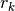.
cylinders of radius 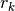.
The chosen body model is made of 11 cylinders. 4 cylinders decribing the two arms, 4 cylinders decribing the two legs, 2 cylinders describing the trunk and 1 cylinder for the head.
The body cylinder model is handle by a dedicated Python class call Body
To create a void body, simply instantiate a Body object from the class
John = Body()
which is equivalent to :
John = Body(_filebody='John.ini',_filemocap='07_01.c3d')
The default body filename is John.ini and the default motion capture filename is ‘07_01.c3d’. The creation of a Body consists in reading a _filebody and a _filemocap
Description of a body file¶
An example of a body file is given below. It is a file in ini format with 4 sections.
- [nodes]
This section associates a node number to a c3d fils conventional node number
NodeId = C3DNODE
- [cylinder]
This section associates a cylinder Id to a dictionnary wich contains cylinder tail head and radius information
CylId = {'t',NodeId1,'h',NodeId2,'r',float (m),'name',}
- [device]
This section associates a device name to a dictionnary wich contains cylinder device related information
DevId = {'typ' : {static|mobile}
'cyl': CylId
'l' : length coordinate in ccs,
'h' : height coordinate in ccs,
'a' : angle coordinate in ccs,
'file' : antenna file ,
'T' : Rotation matrix }
#%load /home/uguen/Bureau/P1/ini/Francois.ini
[nodes]
0 = STRN 1 = CLAV 2 = RFHD 3 =RSHO 4 =LSHO 5 =RELB 6 =LELB 7 =RWRB 8 =LWRB 9 =RFWT 10 =LFWT 11 =RKNE 12 =LKNE 13 =RANK 14 =LANK 15 =BOTT [cylinder] ; sternum (STRN) - clavicule (CLAV) trunku = {‘t’:0,’h’:1,’r’:0.18,’i’:0} ; bottom (BOTT) sternum (STRN) trunkb = {‘t’:15,’h’:0,’r’:0.17,’i’:10} ; clavicule (CLAV) - tete (RFHD) headu = {‘t’:1,’h’:2,’r’:0.12,’i’:1} ; coude droit (RELB) epaule droite (RSHO) armr = {‘t’:5,’h’:3,’r’:0.05,’i’:2} ; coude gauche (LELB) epaule gauche (LSHO) arml = {‘t’:6,’h’:4,’r’:0.05,’i’:3} ; poignet droit (RWRB) coude droit (RELB) forearmr = {‘t’:7,’h’:5,’r’:0.05,’i’:4} ; left wrist (LWRB) left elbow (LELB) forearml = {‘t’:8,’h’:6,’r’:0.05,’i’:5} ; knee droit (RKNE) hanche droit (RFWT) thighr = {‘t’:11,’h’:9,’r’:0.05,’i’:6} ; knee left (LKNE) hanche left (LFWT) thighl = {‘t’:12,’h’:10,’r’:0.05,’i’:7} ; cheville droit (RANK) genou droit (RKNE) calfr = {‘t’:13,’h’:11,’r’:0.05,’i’:8} ; cheville droit (LANK) genou droit (LKNE) calfl = {‘t’:14,’h’:12,’r’:0.05,’i’:9} [device] 0 = {‘typ’:’static’,’name’:’BeSpoon Phone’,’cyl’:’trunku’,’l’:0.1,’h’:0.01,’a’:0,’file’:’S2R2.sh3’,’T’:np.array([[1,0,0],[0,1,0],[0,0,1]])} 1 = {‘typ’:’static’,’name’:’Movea Accel’,’cyl’:’trunku’,’l’:0.1,’h’:0.01,’a’:180,’file’:’S2R2.sh3’,’T’:np.array([[1,0,0],[0,1,0],[0,0,1]])} 2 = {‘typ’:’static’,’name’:’Optivent Glass’,’cyl’:’head’,’l’:0.7,’h’:0.01,’a’:0,’file’:’S2R2.sh3’,’T’:np.array([[1,0,0],[0,1,0],[0,0,1]])} 3 = {‘typ’:’static’,’name’:’Geonaute Podo’,’cyl’:’trunkb’,’l’:0.1,’h’:0.01,’a’:45,’file’:’S2R2.sh3’,’T’:np.array([[1,0,0],[0,1,0],[0,0,1]])} 4 = {‘typ’:’static’,’name’:’Breizh Watch’,’cyl’:’forearmr’,’l’:0.2,’h’:0.01,’a’:0,’file’:’S2R2.sh3’,’T’:np.array([[1,0,0],[0,1,0],[0,0,1]])} 5 = {‘typ’:’static’,’name’:’Breizh Watch’,’cyl’:’forearml’,’l’:0.2,’h’:0.01,’a’:0,’file’:’S2R2.sh3’,’T’:np.array([[1,0,0],[0,1,0],[0,0,1]])} [mocap]
walk = ‘07_01_c3d’
John
My name is : John
I have a Galaxy Gear device on the left forearm
I have a cardio device on the upper part of trunk
I am nowhere yet
filename : 07_01.c3d
nframes : 300
Centered : True
Mocap Speed : 1.36558346484
Francois = Body(_filebody='Francois.ini',_filemocap='07_01.c3d')
Francois
My name is : Francois
I have a Movea Accel device on the upper part of trunk
I have a BeSpoon Phone device on the upper part of trunk
I have a Geonaute Podo device on the lower part of trunk
I have a Optivent Glass device hea
I have a Breizh Watch device on the left forearm
I have a Breizh Watch device on the right forearm
I am nowhere yet
filename : 07_01.c3d
nframes : 300
Centered : True
Mocap Speed : 1.36558346484
Loading a Motion Capture File¶
A .c3d motion capture file is loaded with the method loadC3D with as arguments the motion capture file and the number of frames to load.
The motion is represented as a sequence of framef stored in the d variable member.
It is possible to get the information from the C3D header by using the verbose option of the read_c3d function
# Video Frame Rate
Vrate = 120
# Inter Frame
Tframe = 1./120
# select a number of frame
nframes = 300
# Time duration of the whole selected frame sequence
Tfseq = Tframe*nframes
#
# load a .c3dmotion capture file
# this update the g.pos
#
#bc.loadC3D(filename='07_01.c3d',nframes=nframes,centered=True)
The duration of the capture is
print "Duration of the motion capture sequence", Tfseq," seconds"
Duration of the motion capture sequence 2.5 seconds
d is a MDA of shape (3,npoint,nframe). It contains all the possible configurations of the body. In general it is supposed to be a cyclic motion as an integer number of walking steps. This allows to instantiate the body configuration anywhere else in space in a given trajectory.
A specific space-time configuration of the body is called a ``topos``.
np.shape(John.d)
(3, 16, 300)
Defining a trajectory¶
A Trajectory is a class which :
- derives from a pandas DataFrame
- is container for time,position,velocity and acceleration.
To define a default trajectory :
traj = Trajectory()
t = traj.generate()
traj.head()
| x | y | z | vx | vy | vz | ax | ay | az | s | |
|---|---|---|---|---|---|---|---|---|---|---|
| 1970-01-01 00:00:00 | 0.000000 | 0.000000 | -0.675722 | 0.061186 | 0.204082 | 0.539726 | -0.000229 | 0 | 0.401367 | 0.000000 |
| 1970-01-01 00:00:00.204082 | 0.061186 | 0.204082 | -0.135996 | 0.060957 | 0.204082 | 0.941093 | -0.000458 | 0 | -0.976458 | 0.580256 |
| 1970-01-01 00:00:00.408163 | 0.122143 | 0.408163 | 0.805096 | 0.060499 | 0.204082 | -0.035365 | -0.000684 | 0 | 0.439891 | 1.545150 |
| 1970-01-01 00:00:00.612245 | 0.182642 | 0.612245 | 0.769731 | 0.059815 | 0.204082 | 0.404526 | -0.000909 | 0 | -2.415204 | 1.760928 |
| 1970-01-01 00:00:00.816327 | 0.242457 | 0.816327 | 1.174257 | 0.058906 | 0.204082 | -2.010679 | -0.001129 | 0 | 2.788602 | 2.217949 |
5 rows × 10 columns
f,a = traj.plot()

settopos () method¶
Once the trajectory has been defined it is possible to send the body at the position corresponding to any time of the trajectory with the settopos method.
settopos takes as argument
- A trajectory
- A time index
traj.__repr__()
't (s) : 0.0:9.591837nd (m) : 59.4653280432nVmoy (m/s) : 6.19957658196n'
John.settopos(traj,t=5)
figure(figsize=(15,20))
for t in arange(traj.tmin+0.4,traj.tmax,0.5):
John.settopos(traj,t=t)
f,a=John.show(color='b',plane='yz',topos=True)
axis('off')

John
My centroid position is
[ 0.31956097 9.3877551 ]
filename : 07_01.c3d
nframes : 300
Centered : True
Mocap Speed : 1.36558346484
Francois.settopos(traj,t=6)
Francois
My centroid position is
[ 0.97911919 5.91836735]
filename : 07_01.c3d
nframes : 300
Centered : True
Mocap Speed : 1.36558346484
- 3 : dimension of space
- 16 : number of nodes
- 300 : number of frames
The figure below shows the projection in a vertival plane of the body nodes.
Centering the motion¶
John.centered
True
In order to translate the motion in any point in space-time, a distinction is made between the real motion or topos and the centered motion capture which acts as a virtual motion.
Let 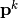 denotes the center of gravity of the body in the (O,x,y) plane
John.center()
a = np.hstack((John.vg,John.vg[:,-1][:,newaxis]))
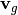 is the velocity vector of the gravity center of the body.
print np.shape(John.pg)
print np.shape(John.vg)
(3, 300)
(3, 300)
print John.vg[:,145]
print John.vg[:,298]
[ 0.0114987 -0.00026335 0. ]
[ 1.08123514e-02 7.24411022e-05 0.00000000e+00]
At that point the body structure is centered.
The frame is centered in the xy plane by substracting from the configuration of points the projection of the body in the xy plane.
np.shape(John.d)
(3, 16, 300)
John.npoints
16
Each frame is centered above the origin. For example for a walk motion the effect of the centering is just like if the body was still walking but not moving forward exactly in the same manner as a walk on a conveyor belt.
pgc = np.sum(John.d[:,:,0],axis=1)/16
pg0 = John.pg[:,0]
print "True center of gravity", pg0
print "Center of gravity of the centered frame",pgc
True center of gravity [-1.74251571 0.49373077 0. ]
Center of gravity of the centered frame [ 3.74700271e-16 1.38777878e-17 8.94887363e-01]
np.shape(John.pg)
(3, 300)
The current file contains 300 frames
tframe = arange(John.nframes)
np.shape(John.pg[0:-1,:])
(2, 300)
xg = John.pg[0,:]
yg = John.pg[1,:]
zg = John.pg[2,:]
figure(figsize=(8,8))
subplot(311)
plot(tframe,xg)
title('x component')
ylabel('m')
subplot(312)
xlabel('frame index')
title('y component')
ylabel('m')
plot(tframe,yg)
subplot(313)
xlabel('frame index')
title('Motion capture centroid trajectory')
ylabel('m')
plot(xg,yg,'.b')
d = John.pg[0:-1,1:]-John.pg[0:-1,0:-1]
smocap = cumsum(sqrt(sum(d*d,axis=0)))
Vmocap = smocap[-1]/Tfseq
title('Length = '+str(smocap[-1])+' V = '+str(Vmocap*3.6)+' km/h')
axis('scaled')
axis('off')
plt.tight_layout()

plot(smocap)
title('evolution of curvilinear abscisse from motion capture centroid trajectory')
xlabel('frame index')
ylabel('distance (meters)')
<matplotlib.text.Text at 0x7fdd45827110>

Defining a large scale trajectory¶
A large scale trajectory is defined in the 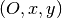 plane.
traj is a data structure (Npt,2)
v = Vmocap
print v*3.6,"Kmph"
4.91610047343 Kmph
# time in seconds
time = np.arange(0,10,0.01)
x = v*time
y = np.zeros(len(time))
z = np.zeros(len(time))
traj = Trajectory()
traj.generate(time,np.vstack((x,y,y)).T)
traj.tmax
9.97
fig ,ax = traj.plot()
traj.head()
| x | y | z | vx | vy | vz | ax | ay | az | s | |
|---|---|---|---|---|---|---|---|---|---|---|
| 1970-01-01 00:00:00 | 0.000000 | 0 | 0 | 0.013656 | 0 | 0 | 0.000000e+00 | 0 | 0 | 0.000000 |
| 1970-01-01 00:00:00.010000 | 0.013656 | 0 | 0 | 0.013656 | 0 | 0 | 0.000000e+00 | 0 | 0 | 0.013656 |
| 1970-01-01 00:00:00.020000 | 0.027312 | 0 | 0 | 0.013656 | 0 | 0 | 0.000000e+00 | 0 | 0 | 0.027312 |
| 1970-01-01 00:00:00.030000 | 0.040968 | 0 | 0 | 0.013656 | 0 | 0 | 6.938894e-18 | 0 | 0 | 0.040968 |
| 1970-01-01 00:00:00.040000 | 0.054623 | 0 | 0 | 0.013656 | 0 | 0 | -1.387779e-17 | 0 | 0 | 0.054623 |
5 rows × 10 columns

Trajectory¶
posvel()¶
The posvel() function (position and velocity) takes as arguments the following parameters
- traj a plane trajectory object.
 time for evaluation of topos
time for evaluation of topos- 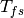 duration of the periodic motion frame sequence
and returns
- the frame index 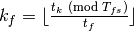
- the trajectory index 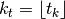
- velocity unitary vector along motion capture frame 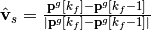
- :math:`hat{mathbf{w}}_s = mathbf{hat{z}} times hat{mathbf{v}}_s `
- velocity unitary vector along trajectory 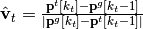
- :math:`hat{mathbf{w}}_t = mathbf{hat{z}} times hat{mathbf{v}}_t `
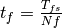 is the interframe time or frame sampling period, it is equal to the whole duration of the motion sequence divided by the number of frames
settopos is a method which takes as argument :
- traj a plane trajectory (Npt,2)
- time for evaluation of topos
In futher version of the project, this function will be modified to be able to avoid passing the whole trajectory.
John.settopos(traj=traj,t=3)
There is now a new data structure in the Body objet. This data structure is called a topos.
print np.shape(John.topos)
(3, 16)
John.topos
array([[ 4.19599817, 4.15046572, 4.13081653, 4.07294142, 4.08289287,
4.11542251, 3.94530449, 4.26514518, 3.82039411, 4.12746908,
4.18189918, 3.89824308, 4.28535797, 3.70884964, 4.41212222,
4.15468413],
[ 0.00978643, 0.01039192, -0.08586912, -0.15014439, 0.17454155,
-0.29891008, 0.28336831, -0.31726715, 0.37578539, -0.14822518,
0.12069953, -0.11848735, 0.13268648, -0.04485156, 0.07025805,
-0.01376282],
[ 1.18925612, 1.35442836, 1.57836099, 1.39037819, 1.40039528,
1.07349379, 1.11418117, 0.83620759, 0.89701301, 0.89713179,
0.89777028, 0.44315412, 0.43969984, 0.09704225, 0.05562085,
0.89745103]])
John.show3()
John.settopos(traj=traj,t=1)
fig,ax=John.plot3d(topos=True)
John.settopos(traj=traj,t=4)
John.plot3d(topos=True,fig=fig,ax=ax)
John.settopos(traj=traj,t=6)
John.plot3d(topos=True,fig=fig,ax=ax)
(<matplotlib.figure.Figure at 0x7fdd458256d0>,
<matplotlib.axes.Axes3DSubplot at 0x7fdd4582d2d0>)

Definition of Several Coordinates systems¶
Each cylinder of the Body model bears one specific coordinate system.
One or several cylinder coordinate systems can be chosen to define the Body Local Coordinates System (BLCS) which is required for motion capture (BLCS) applications.
In general, the origin will be chosen on a position which is the most time invariant as on the chest or the back.
Those frames of references are all defined in the Global Coordinate System (GCS) of the scene.
Construction of the Cylinder Coordinate System (CCS)¶
The method setccs() is used to associate a Cylinder Coordinate System (CCS) to each cylinder of the bodyCylinder model. Notice that those cylinders coordinates systems are not known by the localization application. The localization application will define the BLCS from the position of radiating devices placed on the body surface.
Each basis is constructed with the function from
geomutil.onbfromaxe() : orthonormal bases from axes. This function
takes 2 sets of  points 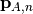 and
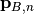 as input and provides an orthonormal basis as
output.
points 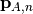 and
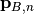 as input and provides an orthonormal basis as
output.
3 unitary vectors are constructed :
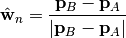
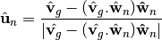
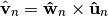
Where 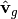 is the unit velocity vector along actual trajectory.
The outpout of geomutil.onbframe is an MDA
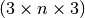 of unitary matrices aggregated
along axis 1
![\mathbf{T}_n=[\hat{\mathbf{u}}_n, \hat{\mathbf{v}}_n, \hat{\mathbf{w}}_n]](../../_images/math/cb83eb772b450d76e29d4fadef3da133d65a7c61.png)
To create the CCS :
John.setccs()
import scipy.linalg as la
print "ccs dimensions : ",np.shape(John.ccs)
print John.ccs[0,:,:]
print "Check determinant : ", la.det(John.ccs[0,:,:])
ccs dimensions : (11, 3, 3)
[[ 0.94678656 0.05306765 -0.31745715]
[-0.06834689 0.99696857 -0.03718026]
[ 0.31452173 0.05689898 0.94754345]]
Check determinant : 1.0
Create a Wireframe body representation from the body graph model
Representation of frames associated with the cylinder
John.show3()
On the figure below the wireframe model is shown associated with the 11 CCS (Cylinder coordinates systems)
Image('CCS.png')

Placing a dcs (Device Coordinate System ) on the cylinder¶
A DCS is refered by 4 numbers 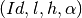
- Id : Cylinder Id
- l : length along cylinder
- h : height above cylinder generatrix
- alpha : angle from front direction (degrees)
Id = 4 # 4 Left Arm
l = 0.1 # Longitudinal coordinates
h = 0.03 # height
alpha = 45 # angle degrees
John.dcyl
{'arml': 3,
'armr': 2,
'calfl': 9,
'calfr': 8,
'forearml': 5,
'forearmr': 4,
'head': 1,
'thighl': 7,
'thighr': 6,
'trunkb': 10,
'trunku': 0}
Rotate Matrix around z
John.settopos(traj=traj,t=6,cs=True)
John.dcyl
{'arml': 3,
'armr': 2,
'calfl': 9,
'calfr': 8,
'forearml': 5,
'forearmr': 4,
'head': 1,
'thighl': 7,
'thighr': 6,
'trunkb': 10,
'trunku': 0}
John.show3(topos=True,dcs=True)
John.show3(topos=True,pattern=True)
---------------------------------------------------------------------------
ValueError Traceback (most recent call last)
<ipython-input-48-a9fdbef0bd42> in <module>()
----> 1 John.show3(topos=True,pattern=True)
/home/uguen/Documents/rch/devel/pylayers/pylayers/mobility/body/body.pyc in show3(self, **kwargs)
787 kwargs[key] = value
788
--> 789 bdy = self.geomfile(**kwargs)
790 bdy.show3()
791
/home/uguen/Documents/rch/devel/pylayers/pylayers/mobility/body/body.pyc in geomfile(self, **kwargs)
961 #T = np.eye(3)
962 T = self.acs[key]
--> 963 geo.pattern(Ant.theta[:,np.newaxis],Ant.phi[np.newaxis,:],V,po=U[:,0],T=T,ilog=False,minr=0.01,maxr=0.2)
964 bodylist.append('{<'+_filepatt+'.off'+"}\n")
965
/home/uguen/Documents/rch/devel/pylayers/pylayers/util/geomutil.pyc in pattern(self, theta, phi, E, **kwargs)
668 # antenna cs -> glogal cs
669 # q : Nt x Np x 3
--> 670 q = np.einsum('ij,klj->kli',T,p)
671 #
672 # translation
ValueError: operand has more dimensions than subscripts given in einstein sum, but no '...' ellipsis provided to broadcast the extra dimensions.
Image('acs.png')